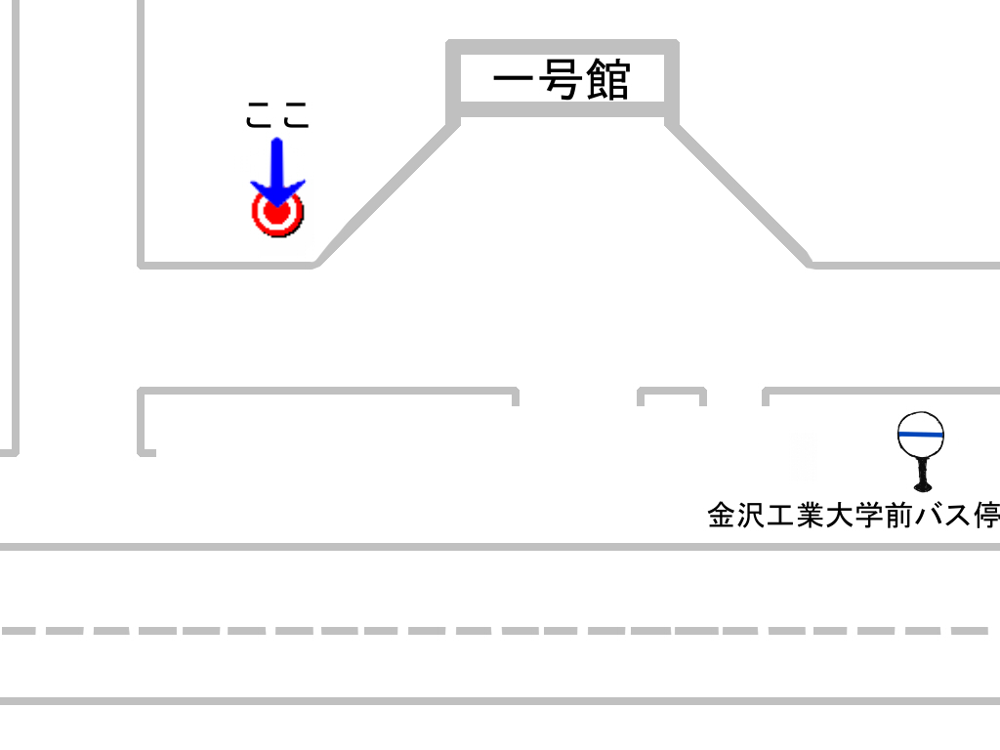
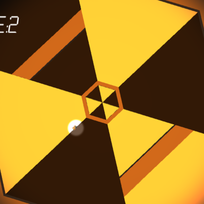
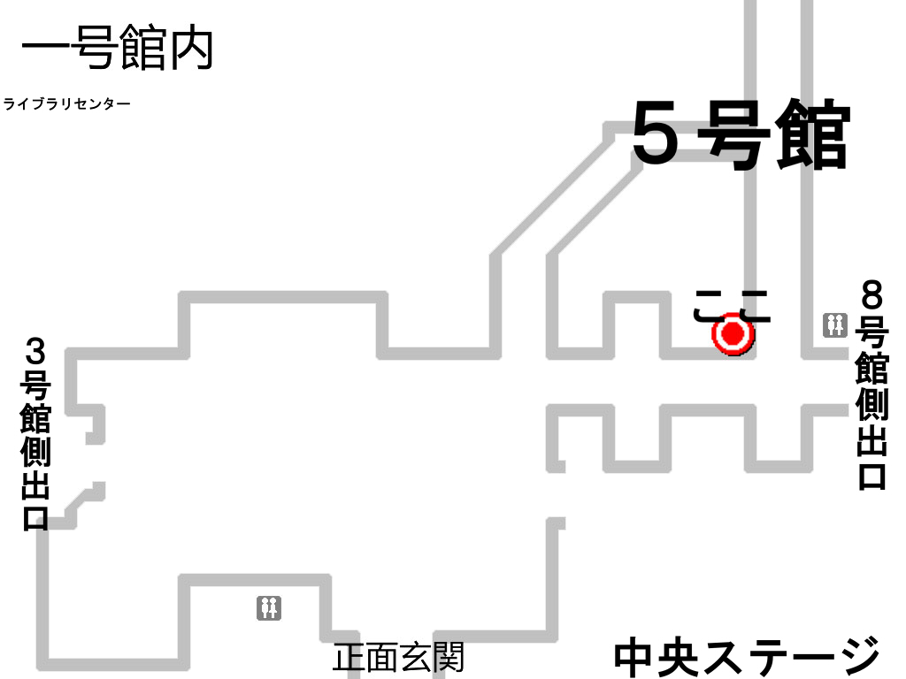

電子計算機研究会in工大祭の特設ページです。
出店の内容や作品の展示を行っています。
工大祭では美味しいチキンナゲットやホカホカのハッシュドポテトを販売しています。

一号館正面入り口前で販売していますので、工大祭に立ち寄った際には是非食べに来てください！
Music

Game
2D Art
3D Graphic
工大祭については
こちら

電子計算機研究会の作品展示場所は１号館１０５号室です。
ホームページ上に展示していない作品も沢山ありますので、是非お立ち寄りください。